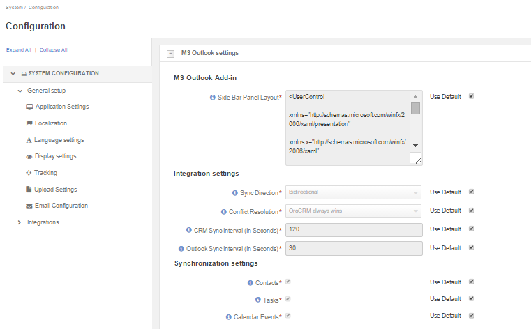
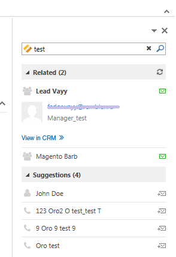

OroCRM Enterprise Edition supports data synchronization in the OroCRM and Outlook. All the contacts, tasks and calendar events available for the user can be synchronized with the specified Outlook account and vice versa.
From this article you will learn how to configure and run synchronization, and see the workflow used for that.
Note
Emails are not synced in the course of Outlook integration. For this, please refer to Email Configuration topic.
RAM
Minimum:
MS Outlook x86, x64 – 4GB
Recommended:
MS Outlook x86 – 4GB
MS Outlook x64 – 8GB
CPU
Minimum:
MS Outlook x86 - 1 GHz IA-32 processor
MS Outlook x64 - 1 GHz x86-64 processor
Recommended:
MS Outlook x86 – 2-3 GHz IA-32 processor (Dual Core)
MS Outlook x64 – 2-3 GHz x86-64 processor (Dual Core)
HDD
Available disk space – fully depends on the size of PST file you operate and other programs installed on your computer but we recommend at least 40GB of available disk space.
Disk average rotational latency
Minimum:
20 milliseconds
Recommended:
5 milliseconds
OroCRM Enterprise version 1.6+
Outlook 2010+
Note
Please note that the following factors can influence the ORO CRM Outlook add-in performance
In order to enable data synchronization from OroCRM go to “My User” and click the link to download the add-in to integrate with your Outlook client.
Wait for download to finish and run the installation process.
System administrators can modify the add-in look:
In the example below, you can see the add-in default look:
You can configure the set of entities to be synchronized, synchronization direction, synchronization intervals and priority of the conflict resolution.
Go to System → SYSTEM CONFIGURATION → Integrations → MS Outlook settings → Integration Settings.
| Setting | Description | Possible Values | Default Value |
|---|---|---|---|
| Sync Direction | The data synchronization direction |
|
Biderectional |
| Conflict Resolution | Conflict resolution strategy to be used if the same data has been changed in both Outlook and CRM |
|
OroCRM always wins |
| CRM Sync Interval (In Seconds) | How often changes on the CRM side will be checked | Any numeric value from 1 to 86399 | 120 |
| Outlook Sync Interval (In Seconds) | How often changes on Outlook side will be checked | Any numeric value from 1 to 86399 | 30 |
“Contacts, Tasks and Calendar Events”,”Records of the entity are synchronized if the box is checked”,”Yes or No”,” Yes”
Once you have installed the .msi file, the “OroCRM for Outlook” menu will appear in your Oultlook menu bar.
Choose “Settings”. The “OroCRM for Outlook Settings” window will emerge. The following fields are available
| Name | Description |
|---|---|
| OroCRM URL | The Web address of your OroCRM instance. Mandatory field. |
| Ignore self-signed certificate | Check this box to allow connection to secure servers that use self-signed certificates. We recommend to keep it checked at all times. |
| User | Your Username as defined on the My user page of the OroCRM. Mandatory field. |
| API Key | API Key as generated on the My user page of the OroCRM. Mandatory field. |
| Enable Sync |
|
| Show Alerts |
|
Values of the fields of an OroCRM and Outlook records are mapped as described below:
The following fields of an OroCRM Contact record are mapped to the following fields of the Outlook Contact Record.
| OroCRM Field | Outlook Field | Note |
|---|---|---|
| First Name | First Name | If no First Name is defined in the Outlook record, the Last Name value is used for the both first name and last name in OroCRM. |
| Middle Name | Middle Name | |
| Last Name | Last Name | If no Last Name is defined in the Outlook record, the First Name value is used for the both first name and last name in OroCRM. |
| Name Suffix | Name Suffix | |
| Description | Notes | |
| All the existing email addresses are mapped. | ||
| Phone | Primary Phone | Only the first OroCRM phone number is mapped. |
| Job Title | Job Title | |
| Birthday | Birthday | |
| Gender | Gender | |
| Fax | Fax | |
| Address of a Billing Type | Business Address | |
| Address of a Shipping Type | Home Address | |
| Address with no type defined | Other Address |
The following fields of an OroCRM Task record are mapped to the following fields of the Outlook Task Record.
| OroCRM Field | Outlook Field |
|---|---|
| Subject | Subject |
| Priority | Priority |
| Due Date | Due Date |
OroCRM statuses are mapped to Outlook as is:
| OroCRM Task Status | Outlook Task Status |
|---|---|
| In progress | In progress |
| Closed | Closed |
| Open | Open |
Outlook status not available in OroCRM are mapped as follows:
| Outlook Task Status | OroCRM Task Status |
|---|---|
| Not Started | Open |
| Completed | Closed |
| Waiting on someone else | In progress |
| Deferred | In Progress |
The following fields of an OroCRM Calendar Event record are mapped to the following fields of an Outlook Appointment.
| OroCRM Field | Outlook Field |
|---|---|
| Title | Subject |
| Start | Start time |
| End | End time |
| All-Day Event | All day event |
Note
Only a calendar assigned to the specified user is mapped, regardless of access settings.
Invitations, received by the user are sent to Outlook as regular calendar event.
Synchronization will start automatically, or as soon as the user has clicked the StartSyncNow button on the side panel, subject to the settings defined.
For every entity synchronized, there is also a key defined. The key is a set of field values used to identify an entity record. Fields of a key can be chosen subject to the specific company needs and defined at the back-end. The following keys are used by default:
| Entity | Key Fields |
|---|---|
| Contact | First Name, Last Name, Gender and Birthday |
| Calendar Event | Title(Subject), Start Time, End Time and whether it is an All-day event |
| Task | Subject and Task Priority |
Every contact, task and calendar event present in OroCRM has a unique ID. When the record is saved in Outlook, the ID value is saved from OroCRM in the OroCRM_id field.
Synchronization is run in the same way for records of activities, tasks and calendar events:
All the records processed in OroCRM since the latest synchronization date and available to the user are checked:
Note
During the first synchronization or resynchronization, all the Outlook records with a non-empty the OroCRM_id field are deleted first, and then OroCRM record keys are checked for all of them.
| If | Then |
|---|---|
| Such record already exists in Outlook. | Values of the mapped fields of the OroCRM record replace corresponding values for the Outlook record. |
| A record doesn’t yet exist in Outlook. | OroCRM creates the record in Outlook. |
| Multiple matching records exist in Outlook. | OroCRM updates one of them. |
| You’ve updated a record in OroCRM. | Values of the mapped fields of the OroCRM record replace corresponding values for the Outlook record. |
| You’ve updated a record in Outlook. | The updates remain in the Outlook record, but won’t sync to the OroCRM. |
| You’ve deleted a record in Outlook. | OroCRM creates the record again. |
| You’ve deleted a record in OroCRM. | The record stays in Outlook with no changes. |
All the records processed in Outlook since the latest synchronization date and available to the user are loaded:
| If | Then |
|---|---|
| Such record (record with such id) already exists in OroCRM. | Values of the mapped fields of the Outlook record replace corresponding values for the OroCRM record. |
| A record doesn’t yet exist in OroCRM. | A new record is created in OroCRM. |
| You’ve updated a record in OroCRM. | Values of the mapped fields of the Outlook record replace corresponding values of the OroCRM record. |
| You’ve updated a record in Outlook. | Values of the mapped fields of the Outlook record replace corresponding values of the OroCRM record. |
| You’ve deleted a record in Outlook. | The record stay in OroCRM. |
| You’ve deleted a record in OroCRM. | The record are deleted from Outlook. |
For Bidirectional synchronization, synchronization from OroCRM to Outlook is performed first and followed by synchronization from Outlook to OroCRM.
| If | Then |
|---|---|
| A record exists in both OroCRM and Outlook. | Values of the mapped fields of the OroCRM record replace corresponding values for the Outlook record. |
| A record doesn’t yet exist in OroCRM. | A new record is created in OroCRM. |
| A record doesn’t yet exist in Outlook. | A new record is created in Outlook. |
| You’ve updated a record in OroCRM. | Values of the mapped fields of the OroCRM record replace corresponding values of the Outlook record. |
| You’ve updated a record in Outlook. | Values of the mapped fields of the Outlook record replace corresponding values of the OroCRM record. |
| You’ve updated a record in the both OroCRM and Outlook. | Subject to your conflict resolution settings. |
| You’ve deleted a record in Outlook. | The record stay in OroCRM and are be added to Outlook. |
| You’ve deleted a record in OroCRM. | The record are be deleted from Outlook as well. |